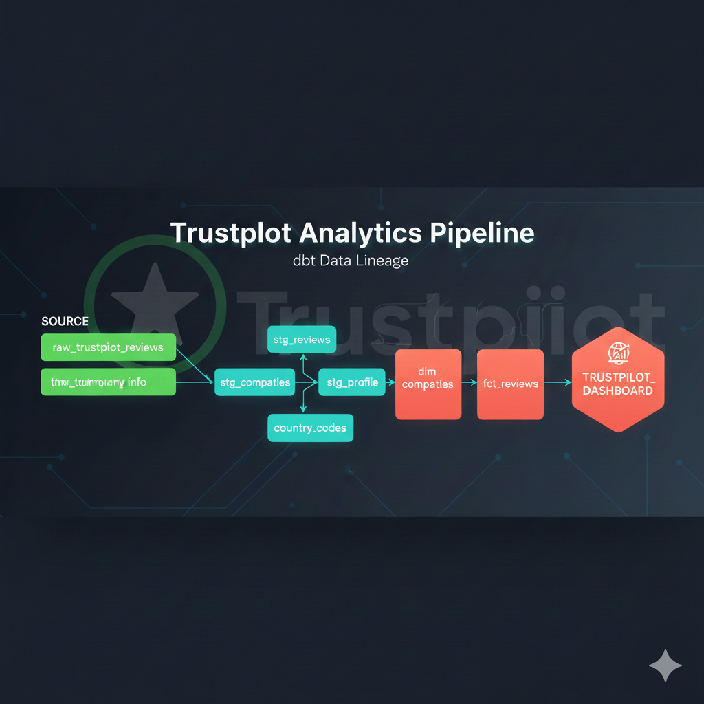

End-to-end analytics engineering pipeline analyzing customer sentiment and review patterns across 25 appliance companies. Built with Python (web scraping), dbt (transformation), Snowflake (data warehouse), and Power BI (visualization). Features 18 automated tests and interactive dbt documentation.


This Project focused on the Data Wrangling Process used in Data Analytics. Using libraries such as NumPy, Pandas, BeautifulSoup and Json, each step of the Wrangling Process (Gathering, Accessing and Cleaning) was applied to a dataset obtained from the tweet archive of Twitter user known as WeRateDogs. The matplotlib library was then used to visualize insights from the cleaned data.
Explored a dataset containing loan information of approximately 113,937 loans with the help of Python libraries such as Numpy and Pandas. Produced Univariate, Bivariate and Multivariate visualizations of the insights using the seaborn and matplotlib libraries.